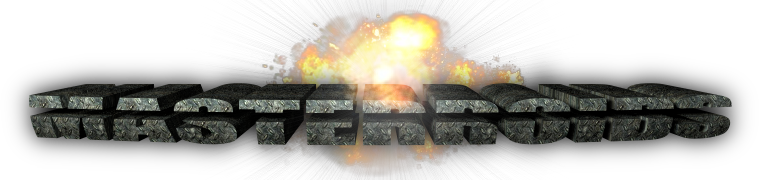

|

version 1.0
by Roman Komary |
|
paused
continue New Game
New Game Options
In Game Options
|
|
Player settings:
Notice, applying can take some seconds.
| ||||||||||||||||||||||||||||||||
| 0 | 0 |
| 0 | 0 |
| 0 | 0 |
| 0 | 0 |
|
GAME OVER
|
|
|
|
Name for player ,
score: |